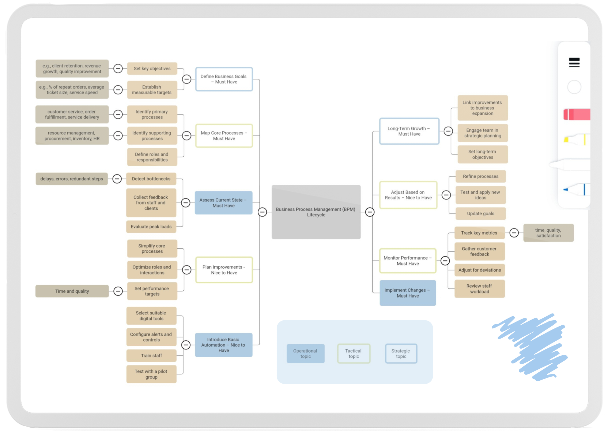
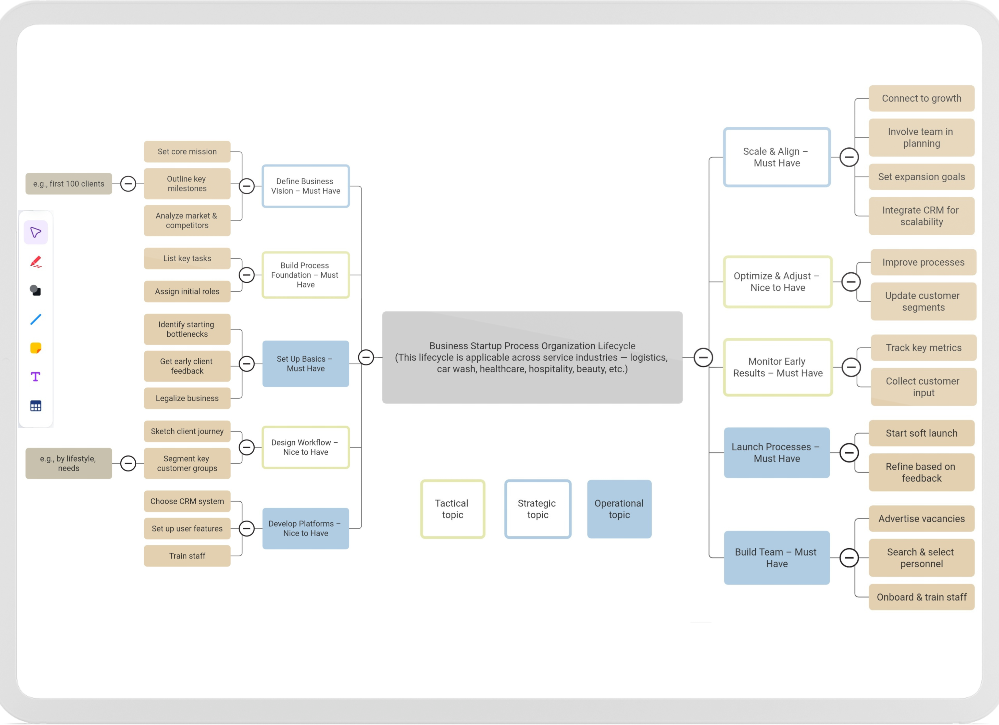

As a freelance business strategist, I deliver rapid growth and optimization, proven through a 9-month salon launch in Dubai.
Experience rapid scaling with 80% client retention, 30% cost reduction, and a $150 average check achieved in just 9 months during a salon launch in Dubai.
Entrust your project to my expertise for swift, impactful results—your success is my priority.
Optimize your operations with tailored BPM strategies, leveraging chatbots and booking systems for efficiency.
Contact me for detailed insights and access to a full BPM map to streamline your business.
Scale your startup with proven strategies: manage contractor networks, grow digital ecosystems, optimize processes, and structure finances for sustainable expansion.
Let me drive your startup’s growth with tailored, rapid scaling solutions.
I leverage a diverse toolkit to craft tailored solutions, from design to financial management.
These tools enable rapid optimization and client retention for your business.
This graph reflects the most significant milestones: 3 months of preparation, when the salon was fully ready to open thanks to my organizational work, and the following 6 months of operations, during which rapid scaling was achieved. Further management required less of my direct involvement, as processes were optimized and responsibilities successfully delegated.
Photos of documents and video reports are presented in the following file: "Documentation case". Please review.